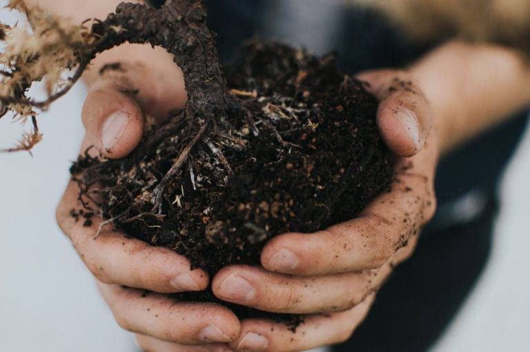
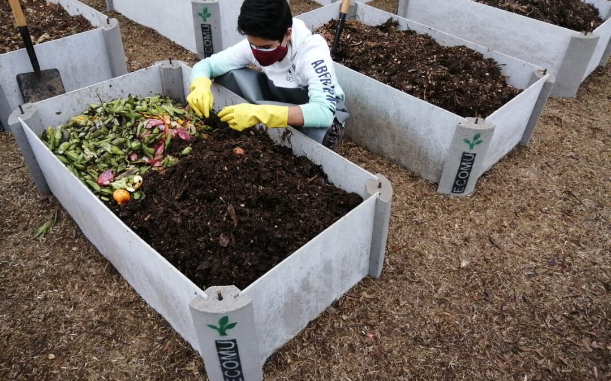

El compostaje es un proceso natural que convierte materia orgánica, como restos de comida, hojas, recortes de césped y otros desechos biodegradables, en un material rico en nutrientes llamado compost.
El compostaje adecuado de los desechos orgánicos que generamos en nuestra vida diaria (alimentos no comestibles o no utilizados) puede reducir la dependencia de fertilizantes químicos, ayudar a recuperar la fertilidad del suelo y mejorar la retención de agua y la llegada de nutrientes a las plantas.
1. Reduces la cantidad de basura que acaba en vertedero o incineradora. Aunque siempre hay que empezar por la palabra «reducir», hay residuos orgánicos inevitables que con el compostaje le damos otra vida.
2. Devuelves al suelo materia orgánica, enriqueciéndolo de esta manera. Esto tiene efectos sobre la estructura del suelo, ya que el compost, al tener un alto contenido en materia orgánica tiende a formar «terrones» lo que ayuda a que el suelo esté aireado y no se compacte, favoreciendo la aireación y la humedad.
3. Obtienes abono de muy alta calidad sin compuestos químicos y libre de patógenos, ya que en el proceso de fermentación aeróbica se llega a los 80ºC, una especie de «pasteurización» de la materia orgánica.
En cuanto a los tipos de residuos que se pueden compostar, la mayoría de los materiales orgánicos pueden compostarse, incluidos:
• Restos de frutas y verduras.
• Cáscaras de huevo (previamente trituradas).
• Posos de café y filtros de papel.
• Restos de comida (evitando carnes, lácteos y aceites en exceso).
• Hojas, recortes de pasto y plantas.
• Papel y cartón no tratados.
• Virutas de madera y serrín.
• Paja y heno.
Selecciona un lugar adecuado: Escoge un área en tu jardín o patio con buena circulación de aire y acceso al sol parcial. Puedes utilizar un contenedor de compostaje o simplemente crear un montón en el suelo.
Reúne los materiales: Recolecta materiales orgánicos como restos de cocina (frutas, verduras, cáscaras de huevo), recortes de césped, hojas, papel y cartón no tratados, entre otros. Evita materiales no biodegradables, como plásticos y productos químicos.
Mezcla los materiales: Alterna capas de materiales ricos en carbono (como hojas secas, cartón) con materiales ricos en nitrógeno (restos de comida, césped cortado). Tritura o corta los materiales más grandes para acelerar el proceso de descomposición.
Asegura la humedad y aireación: Mantén el compost húmedo pero no empapado. Asegúrate de voltear o mezclar el compost regularmente para proporcionar aireación y facilitar la descomposición.
Observa y ajusta: Monitorea el compost regularmente para asegurarte de que esté en las condiciones adecuadas. Ajusta la relación de carbono a nitrógeno según sea necesario y añade agua si el compost está demasiado seco.
Espera a que madure: El compostaje puede tardar varios meses en completarse, dependiendo de diversos factores. Una vez que el compost tiene un aspecto oscuro, terroso y tiene un olor a tierra fresca, está listo para ser utilizado en el jardín como fertilizante natural.
Para una guía más completa puede dirigirse al siguiente enlace: Guía completa sobre compostaje
